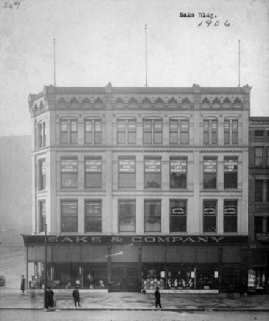
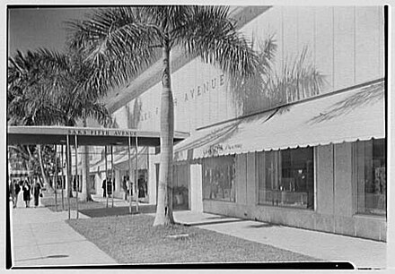

SAKS FIFTH AVENUE
Saks & CO

Andrew Saks was born to a German Jewish family, in Baltimore, Maryland. He worked as a peddler and paper boy before moving to Washington, D.C. where at the age of only 20, and in the still-chaotic and tough economic times of 1867, two years after the United States prevailed in the American Civil War, he established a men's clothing store[10] with his brother Isadore. [11][12] A. Saks & Co. occupied a storefront in the Avenue House Hotel building at 517 (300–308) 7th Street, N.W., in what is still Washington's downtown shopping district. Saks offered his goods at one price only, no bargaining, and offered refunds on merchandise returns, neither of which were the more common practice at that place and time.[citation needed] Saks was also known for its "forceful and interesting, but strictly truthful" newspaper advertising, according to the Washington Evening Star, including a two-page spread, large for that time, in that newspaper on April 4, 1898. Saks annexed the store next door, and in 1887 started building a large new store on the site of the old Avenue Hotel Building at 7th and Market Space (now United States Navy Memorial Plaza).[13]By 1896, Saks and Co. had stores in Norfolk and Richmond, Virginia; ew York City; and Indianapolis, in addition to Washington, D.C., where, Saks called itself "Washington's Wonderful Store".[14]Saks opened a very large store in 1902 in New York City's Herald Square on 34th Street and Broadway.[13][15]: 2 Andrew Saks ran the New York store as a family affair with his brother Isadore, and his sons Horace and William.[citation needed] Andrew Saks died in 1912 and his son Horace took over the company's management. [15]: 2 .
Saks Fifth Aveneu
In 1923, Saks & Co. merged with Gimbel Brothers, Inc., which was owned by a cousin of Horace Saks,[16] Bernard Gimbel, operating as a separate autonomous subsidiary. On September 15, 1924, Horace Saks and Bernard Gimbel opened in the Saks Fifth Avenue Building at 611 Fifth Avenue, with a full-block avenue frontage south of St. Patrick's Cathedral, facing what would become Rockefeller Center.[17] The architects were Starrett & van Vleck, who developed a design derived from classical architecture.
Resort and University store

When Bernard's cousin, Adam Gimbel, became president of Saks Fifth Avenue in 1926 after Horace Saks's sudden death, the company expanded, opening seasonal resort branches in Palm Beach (1926), Atlantic City (1927), Lincoln Road in Miami Beach (1929), Southampton on Long Island (1931), Newport, Rhode Island (1935), Sun Valley, Idaho and Westbury, L.I. (1936), and Greenwich, Connecticut (1937).[18]In 1929, Saks opened its first full-line, year-round flagship store in Chicago, in 1929 , and only six years later moved to a larger location. [18] By the end of the 1930s, Saks Fifth Avenue had a total of 10 stores – the 2 large urban flagships in New York and Chicago, and 8 resort stores. During World War Two, Saks opened Navy and Army shops in New Haven, Connecticut and Princeton, New Jersey, and after the war turned the small branches into University Shops, catering to the Ivy League communities there. More University Shops would open, one near Harvard in Cambridge, Mass., another in Ann Arbor, Michigan (1960).[18]
New urban flagships
Saks had already opened two urban flagship stores before the U.S. joined the war: its now-legendary store in Beverly Hills, and in Detroit (1940). After the war, three more downtown stores opened, albeit smaller in scale: Pittsburgh (1949), Philadelphia (1952) and San Francisco (1952)[18] where Saks competed head-on with local luxury champion I. Magnin.[19]